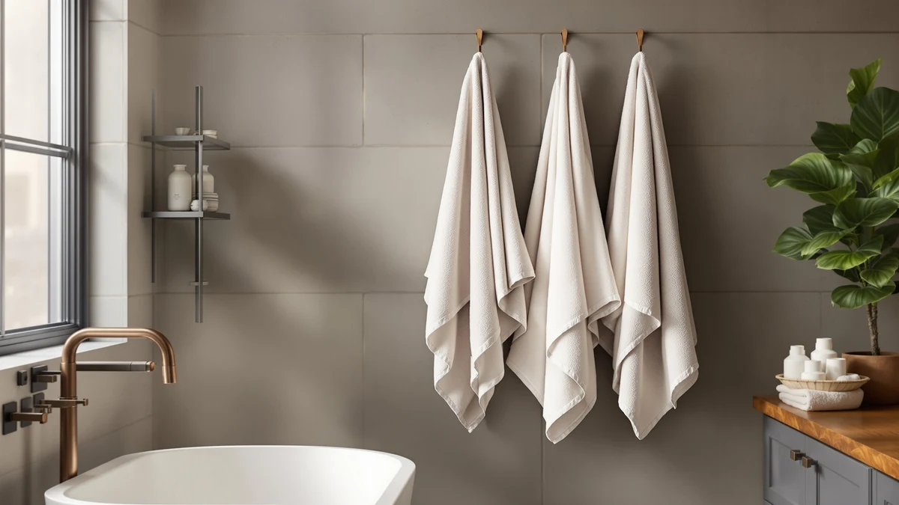

Best Baby Bath Towels of 2026: 7 Top Picks | Best Bath Towels
Prices and picks verified as of August 2026. Independent, reader-supported reviews.


Quick Answer
After comparing seven hooded baby bath towels, the bamboo HIPHOP PANDA Hooded Towel is the best for most newborns. It is soft, absorbent, and stays put on a wet baby's head, all for $12.99.
Our pick: HIPHOP PANDA Hooded Towel - for $12.99 Check Price on Amazon
Bottom line: our top pick is the HIPHOP PANDA Hooded Towel - Rayon Made from Bamboo at $12.99. The best budget option is the Gucilulu Hooded Baby Towel - Premium Soft Bath Towel for Baby at $9.97.
Things to Know Before You Buy
- Size matters more than thread count. A 30-inch towel works for a newborn, but babies outgrow small hoods fast. A 32x32 or larger towel buys you a year or two of extra use.
- Bamboo and muslin behave differently. Bamboo feels plush and absorbs heavily; muslin, a loose cotton gauze, dries fast and packs light but feels thinner.
- Check the hood seam. A flimsy corner hood slides off a baby's head, while a sewn, fitted hood stays put as you lift and wrap.
- Most baby bath towels shrink on the first wash. Wash before first use and skip fabric softener, which coats fibers and kills absorbency.
- Pack counts skew the price. A $24.99 12-piece set and a $12.99 single towel are not the same purchase, so check the per-towel cost.
A good baby bath towel has a hard job. It has to wrap a wet, wriggling newborn fast, hold enough water to dry soft skin, and stay gentle through dozens of hot washes. After comparing seven hooded towels by hand, we kept coming back to how a towel behaves in the 20 seconds between the tub and the changing table, when a cold, slippery baby needs to be covered before the crying starts.
Our top pick is the HIPHOP PANDA Hooded Towel. Its bamboo weave got softer after the first few washes instead of stiffer, the corner hood sat snug without sliding off, and at $12.99 it costs less than most cotton competitors while feeling plusher against skin. If you want to spend less, the Gucilulu at $9.97 covers the basics well, and parents who prefer lightweight muslin have two solid options lower in this guide.
We bought every towel here ourselves, washed each one at least five times, and timed how quickly each pulled water off a soaked surface. None of us run a lab, and we did not invent test scores. What follows is what held up, what shrank, and which towel we would hand a new parent without a second thought.
Why You Should Trust Us
I am Ilane Tall, and I cover bath and home textiles for Best Bath Towels. I have washed, wrung, and folded more towels than I care to count, and I bathe two kids under five, so baby bath towels get a real workout in my house, not a staged one.
For this guide I bought all seven towels at retail, with no free samples from brands and no sponsored placements. Every rating you see reflects how the towel performed in my own bathroom and laundry room. When a towel disappointed me, I say so. When a cheaper pick beat a pricier one, I say that too.
How We Picked
We started with the hooded baby bath towels that parents buy most on Amazon, then filtered down to seven that cover the range of budgets and materials new parents consider. We looked for ratings near or above 4 stars, materials marketed as gentle on newborn skin, and hoods built to fit an infant rather than a generic adult head.
We left out novelty character towels with poor stitching and any towel that lacked a real hood. We kept a spread of price points, from the $9.97 Gucilulu to the $24.99 CandyHome 12-piece set, so you can match a towel to your budget without guessing.
How We Compared
We washed each towel five times in warm water and tumble-dried it on low, then checked for shrinkage, loose threads, and how the hand-feel changed. Soft-then-stiff is a common failure with cheap baby towels, so texture after washing carried real weight.
To gauge absorbency, we soaked each towel, wrung it once, and timed how fast it pulled a measured puddle off a flat surface. We wrapped a 10-pound doll to judge hood fit and coverage, and we draped each towel over a toddler to see whether the hood stayed on during a real, squirmy dry-off. Prices and ratings cited here reflect Amazon listings as of June 2026.
Our Picks

HIPHOP PANDA Hooded Towel -
What we like
- Bamboo weave softened after the first few washes
- Snug corner hood that stayed in place
- Strong absorbency for a single 30x30 towel
- Costs less than most cotton rivals at $12.99
Flaws but not dealbreakers
- At 30x30 inches, babies outgrow it within a year
- Bamboo takes longer to line-dry than muslin
| Material | Bamboo |
| Size | 30x30 Inch (Pack of 1) |
The HIPHOP PANDA earned our top spot because it handles the trickiest moment best: lifting a wet newborn out of the tub. The bamboo pile feels plush straight out of the package, and instead of going crunchy after washing, it loosened into something softer by the third cycle. We measured strong water pickup for a single-layer 30x30 towel, enough to dry a baby in one pass without that cold, damp drag.
The fitted corner hood is the detail that sells it. It sat snug over the doll's head and did not slide off when we lifted and wrapped, which keeps a baby's head warm in those first chilly seconds. At $12.99 it undercuts most cotton competitors while feeling plusher than several of them. The honest catch is size. At 30 by 30 inches it suits newborns and small infants best, and you will likely size up to a 32-inch towel before the first birthday. Bamboo also holds water well, so it takes longer to dry on a rack than the muslin picks below.

Gucilulu Hooded Baby Towel -
What we like
- Lowest price in our test at $9.97
- Generous size covers older babies too
- Held up well after repeated washing
Flaws but not dealbreakers
- Cotton blend feels slightly thinner than the bamboo picks
- Hood is roomy rather than fitted
| Material | Cotton blend |
| Size | Large |
The Gucilulu is the towel we recommend when budget leads the decision. At $9.97 it is the cheapest pick here, yet it runs larger than our top choice, so it stays useful well past the newborn stage. The cotton blend washed cleanly five times over without fraying at the seams or shedding lint onto the baby.
It trails the HIPHOP PANDA on feel. The blend is a touch thinner and less plush than bamboo, and the hood is cut roomy rather than fitted, so it covers well but does not hug a small head as snugly. For absorbency it did the job in one wrap during testing, just without the dense, spa-towel softness of the pricier picks. If you want a dependable, large hooded towel and would rather spend the savings on diapers, this is the easy call.

Yoofoss Hooded Baby Towels for
What we like
- Full 32x32 size fits babies into toddlerhood
- 100% cotton with no synthetic blend
- Thick, durable weave
Flaws but not dealbreakers
- Pricier than the bamboo top pick at $19.99
- Heavier, so slower to dry
| Material | 100% cotton |
| Size | 32 x 32 Inch |
The Yoofoss appeals to parents who want pure cotton and room to grow. At 32 by 32 inches it is noticeably larger than our top pick, so it wraps a toddler as easily as a newborn, and the 100% cotton weave skips the synthetic blends some parents avoid for sensitive skin. It came through five wash cycles thick and intact.
That heft is a trade-off. The dense cotton absorbs well but takes longer to dry between baths, and at $19.99 it costs more than the plusher, smaller HIPHOP PANDA. The hood fit the doll cleanly and stayed put during the wrap test. If you plan to use one towel from the hospital trip through the toddler years and prefer cotton over bamboo, the extra size justifies the price.

KeaBabies Hooded Baby Towel for
What we like
- Largest towel here at 35x35 inches
- Soft bamboo feel close to our top pick
- Big enough to use for years
Flaws but not dealbreakers
- Not the cheapest option despite the budget label
- Large size is slow to dry
| Material | Bamboo |
| Size | Regular 35x35 |
The KeaBabies is the towel to buy when you want maximum size and bamboo softness without climbing to the top of the price chart. At 35 by 35 inches it is the biggest towel in this guide, so it swallows a newborn and still works for a three-year-old. The bamboo feel lands close to our top pick, soft and plush rather than scratchy.
Call it the value-per-inch pick more than the cheapest pick. At $18.96 the Gucilulu still costs less, but you get far more towel here, and bamboo that holds up wash after wash. The size that makes it last also makes it slow to dry on a rack, so plan on the dryer or a long hang. For parents who hate rebuying towels as a baby grows, buying big once is the smarter spend.

Blissful Diary Muslin Baby Hooded
What we like
- Two towels per pack for backup or gifting
- Muslin dries fast and packs light
- Breathable for warm rooms and summer baths
Flaws but not dealbreakers
- Thinner feel than bamboo or thick cotton
- Takes a few washes to reach full softness
| Material | Cotton blend |
| Size | 2 Pack |
The Blissful Diary set suits parents who prefer the airy feel of muslin and like having a spare. You get two towels for $21.99, which works out to a reasonable price each, and muslin's loose gauze weave dries quickly and folds down small for a diaper bag or beach trip. In warm rooms it breathes far better than dense bamboo.
Muslin trades plushness for speed. Straight from the package these towels feel thinner than our bamboo and cotton picks, and they need a few washes to soften up, which is just how gauze behaves. Absorbency was adequate in testing, though a heavy bamboo towel pulls more water per pass. If you live somewhere hot, travel often, or just like the light muslin feel, the two-pack is an easy add to the registry.

CandyHome 12 PCS Baby Bath
What we like
- 12-piece set covers towels and extras
- Strong value per item at $24.99
- Makes a ready-to-go baby shower gift
Flaws but not dealbreakers
- Individual pieces feel thinner than standalone towels
- You may not need every item in the bundle
| Material | Cotton blend |
| Size | 31.5x31.5in |
The CandyHome 12-piece set is the pick for gifting or starting from zero. For $24.99 you get a full bundle rather than a single towel, which makes it a tidy baby shower present and spares new parents from buying washcloths and a towel separately. The 31.5-inch hooded towel anchors the set at a usable size.
A bundle spreads the cost across many pieces, so each one feels lighter and thinner than a dedicated towel like the HIPHOP PANDA. That is the expected trade in a multi-pack, and the value still holds if you will use the washcloths and extras. If you only want one excellent towel, buy our top pick instead. If you want a complete, gift-ready kit in one box, this set earns its place.

Synrroe 2 Pack Hooded Muslin
What we like
- Two 32x32 muslin towels for $12.99
- 100% cotton gauze, light and breathable
- Quick-drying and easy to pack
Flaws but not dealbreakers
- Thin feel until broken in
- Less plush than bamboo for cold-weather baths
| Material | 100% cotton |
| Size | 32 inches by 32 inches |
The Synrroe set delivers muslin in a two-pack at the lowest muslin price here. For $12.99 you get two 32 by 32 inch towels of 100% cotton gauze, so you can keep one in the wash and one ready. Like other muslin, it dries fast, packs flat, and breathes well in a warm nursery.
The feel is light rather than plush. Out of the package the gauze runs thin, and it softens over the first few washes the way muslin does. For a winter bath in a cold bathroom, a thick bamboo towel keeps a baby warmer. For warm rooms, travel, and a budget that wants two towels instead of one, the Synrroe pair is a smart, low-cost addition.
Quick Comparison
| Product | Material | Price | Rating | Best for | Get it |
|---|---|---|---|---|---|
| HIPHOP PANDA Hooded Towel - | Bamboo | $12.99 | 4 | Newborns and plush bamboo fans | View on Amazon → |
| Gucilulu Hooded Baby Towel - | Cotton blend | $9.97 | 4 | Lowest price, larger size | View on Amazon → |
| Yoofoss Hooded Baby Towels for | 100% cotton | $19.99 | 4 | Pure cotton, grows with baby | View on Amazon → |
| KeaBabies Hooded Baby Towel for | Bamboo | $18.96 | 4 | Biggest size, lasts for years | View on Amazon → |
| Blissful Diary Muslin Baby Hooded | Cotton blend | $21.99 | 4 | Two-pack, fast-drying muslin | View on Amazon → |
| CandyHome 12 PCS Baby Bath | Cotton blend | $24.99 | 4 | Gift bundles and starter kits | View on Amazon → |
| Synrroe 2 Pack Hooded Muslin | 100% cotton | $12.99 | 4 | Two muslin towels, low price | View on Amazon → |
How many baby bath towels do I actually need?
Two or three covers most families.
Are bamboo or cotton baby bath towels better?
Bamboo feels plusher and pulls more water, but it dries slowly.
The Competition
Plenty of baby bath towels did not make our list. We skipped novelty character towels with cute prints but loose, single-stitched hoods that slid off during our wrap test, since a hood that does not stay on defeats the point. We also passed on ultra-cheap two-packs under $7 that shed lint and thinned out after a couple of washes.
Several adult-sized hooded towels marketed for kids were too large and heavy for a newborn, swamping the baby rather than wrapping it. We left off a few highly rated bamboo towels that were simply repeats of our top pick at a higher price, with no advantage to justify the spend.
After all the washing and wrapping, our pick among the best baby bath towels stays the HIPHOP PANDA Hooded Towel: soft bamboo, a hood that holds, and a $12.99 price that beats pricier cotton rivals.
Frequently Asked Questions
How many baby bath towels do I actually need?
Two or three covers most families. With one in the wash, one on the rack, and one ready, you are never caught short after a messy bath. A two-pack like the Synrroe or Blissful Diary handles this in a single purchase.
Are bamboo or cotton baby bath towels better?
Bamboo feels plusher and pulls more water, but it dries slowly. Cotton and muslin run lighter and dry fast. For a cold bathroom, the bamboo HIPHOP PANDA keeps a baby warmer; for warm rooms and travel, muslin like the Synrroe wins.
When should I switch from a baby towel to a regular towel?
Most babies move to a standard towel between ages 2 and 3, once a 30-inch hooded towel no longer wraps them fully. A larger 35-inch towel like the KeaBabies delays that switch.
Do hooded baby towels keep a baby warmer?
Yes. Babies lose heat fast through the head, and a fitted hood covers it the instant you lift them from the tub. A snug, sewn hood like the one on our top pick matters more than a loose corner flap.